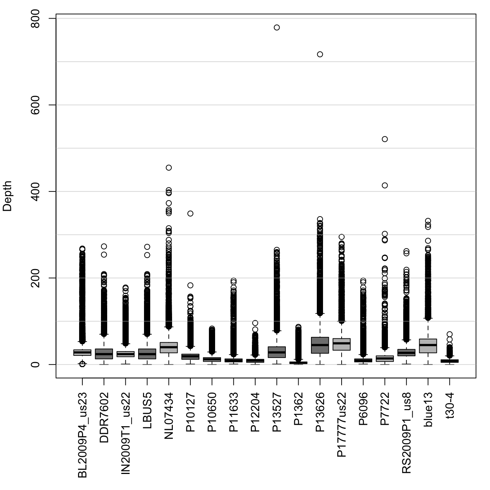
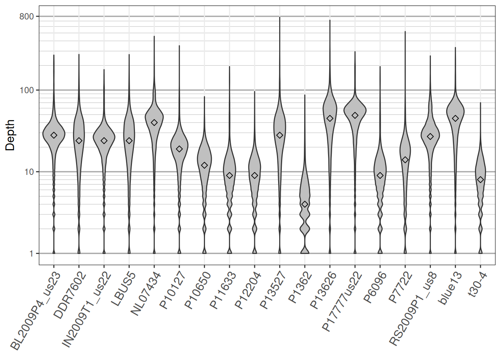
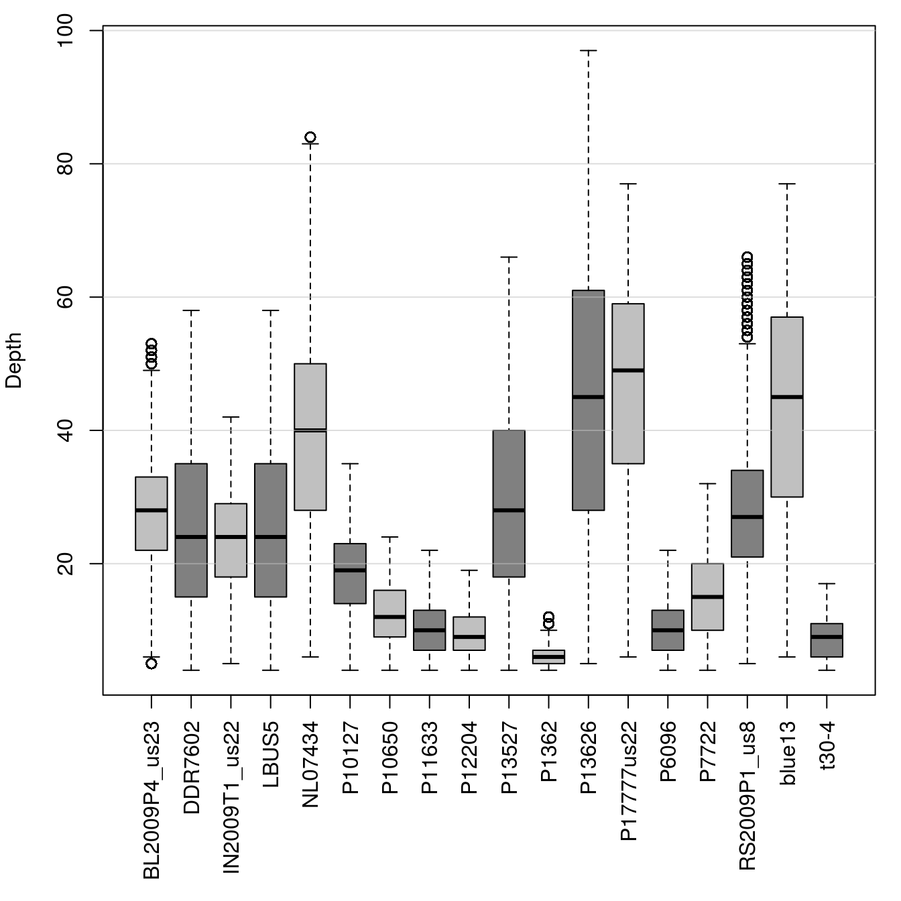

Once data is received from a sequencing center, an initial question is whether the sequencing was successful? A common attempt to address this question is by asking how much sequence coverage was attained. For a diploid organism, one would require at least two reads per variant to infer a genotype. Ideally, we would like a little more so that we have redundancy. How much redundancy is necessary may be a question the researchers need to address themselves. In this vignette we’ll learn how to read in VCF data, extract sequence depth information from it and how to visualize this data.
The topic of reading in VCF format data is covered in other vignettes. We include it here for redundancy, and because every example involving VCF data needs to start with some data.
library(vcfR)##
## ***** *** vcfR *** *****
## This is vcfR 1.8.0.9000
## browseVignettes('vcfR') # Documentation
## citation('vcfR') # Citation
## ***** ***** ***** *****vcf_file <- system.file("extdata", "pinf_sc50.vcf.gz", package = "pinfsc50")
vcf <- read.vcfR(vcf_file, verbose = FALSE)Calling the object by name, with no options (the show method), provides a summary of the data.
vcf## ***** Object of Class vcfR *****
## 18 samples
## 1 CHROMs
## 22,031 variants
## Object size: 22.4 Mb
## 7.929 percent missing data
## ***** ***** *****Some, but not all, variant callers will provide per variant and per sample sequence depth information. Some variant callers may provide this information only as an option (see relevant documentation). We can use the ‘head’ method to explore what sort of information exists in our data.
head(vcf)## [1] "***** Object of class 'vcfR' *****"
## [1] "***** Meta section *****"
## [1] "##fileformat=VCFv4.1"
## [1] "##source=\"GATK haplotype Caller, phased with beagle4\""
## [1] "##FILTER=<ID=LowQual,Description=\"Low quality\">"
## [1] "##FORMAT=<ID=AD,Number=.,Type=Integer,Description=\"Allelic depths fo [Truncated]"
## [1] "##FORMAT=<ID=DP,Number=1,Type=Integer,Description=\"Approximate read [Truncated]"
## [1] "##FORMAT=<ID=GQ,Number=1,Type=Integer,Description=\"Genotype Quality\">"
## [1] "First 6 rows."
## [1]
## [1] "***** Fixed section *****"
## CHROM POS ID REF ALT QUAL FILTER
## [1,] "Supercontig_1.50" "41" NA "AT" "A" "4784.43" NA
## [2,] "Supercontig_1.50" "136" NA "A" "C" "550.27" NA
## [3,] "Supercontig_1.50" "254" NA "T" "G" "774.44" NA
## [4,] "Supercontig_1.50" "275" NA "A" "G" "714.53" NA
## [5,] "Supercontig_1.50" "386" NA "T" "G" "876.55" NA
## [6,] "Supercontig_1.50" "462" NA "T" "G" "1301.07" NA
## [1]
## [1] "***** Genotype section *****"
## FORMAT BL2009P4_us23
## [1,] "GT:AD:DP:GQ:PL" "1|1:0,7:7:21:283,21,0"
## [2,] "GT:AD:DP:GQ:PL" "0|0:12,0:12:36:0,36,427"
## [3,] "GT:AD:DP:GQ:PL" "0|0:27,0:27:81:0,81,1117"
## [4,] "GT:AD:DP:GQ:PL" "0|0:29,0:29:87:0,87,1243"
## [5,] "GT:AD:DP:GQ:PL" "0|0:26,0:26:78:0,78,1034"
## [6,] "GT:AD:DP:GQ:PL" "0|0:23,0:23:69:0,69,958"
## DDR7602 IN2009T1_us22
## [1,] "1|1:0,6:6:18:243,18,0" "1|1:0,8:8:24:324,24,0"
## [2,] "0|0:20,0:20:60:0,60,819" "0|0:16,0:16:48:0,48,650"
## [3,] "0|0:26,0:26:78:0,78,1077" "0|0:23,0:23:69:0,69,946"
## [4,] "0|0:27,0:27:81:0,81,1158" "0|0:32,0:32:96:0,96,1299"
## [5,] "0|0:30,0:30:90:0,90,1242" "0|0:41,0:41:99:0,122,1613"
## [6,] "0|0:36,0:36:99:0,108,1556" "0|0:35,0:35:99:0,105,1467"
## LBUS5 NL07434
## [1,] "1|1:0,6:6:18:243,18,0" "1|1:0,12:12:36:486,36,0"
## [2,] "0|0:20,0:20:60:0,60,819" "0|0:28,0:28:84:0,84,948"
## [3,] "0|0:26,0:26:78:0,78,1077" "0|1:19,20:39:99:565,0,559"
## [4,] "0|0:27,0:27:81:0,81,1158" "0|1:19,19:38:99:523,0,535"
## [5,] "0|0:30,0:30:90:0,90,1242" "0|1:22,22:44:99:593,0,651"
## [6,] "0|0:36,0:36:99:0,108,1556" "0|1:29,25:54:99:723,0,876"
## [1] "First 6 columns only."
## [1]
## [1] "Unique GT formats:"
## [1] "GT:AD:DP:GQ:PL"
## [1]This provides a summary of the information contained in the VCF data. In the genotype section, the first column is titled ‘FORMAT’ and includes fields that describe the genotype data included with each genotype. According to the VCF definition the first element must be the genotype. All subsequent data is optional according to the VCF definition. Each field is defined in the meta region. We can use ‘grep’ to search the meta slot for the definition of these fields.
#strwrap(grep('DP', vcf@meta, value = TRUE))
queryMETA(vcf, element = 'DP')## [[1]]
## [1] "FORMAT=ID=DP"
## [2] "Number=1"
## [3] "Type=Integer"
## [4] "Description=Approximate read depth (reads with MQ=255 or with bad mates are filtered)"
##
## [[2]]
## [1] "INFO=ID=DP"
## [2] "Number=1"
## [3] "Type=Integer"
## [4] "Description=Approximate read depth; some reads may have been filtered"Here ‘DP’ is defined as a ‘FORMAT’ (the genotype region) as well as in the ‘INFO’ column. We’re interested in the former. This tells us that data for depth (DP) exists, so we can extract the DP information from the genotype slot.
dp <- extract.gt(vcf, element='DP', as.numeric=TRUE)We can use this function to extract other fields by changing the value of the ‘element’ parameter. Here, we’ve specified to convert the data to a numeric. This makes sense because depth should be a number describing how many times a variant was sequenced. Some fields, such as the genotype (GT), may not be easily converted to a numeric because they contain non-numeric characters. For example, the genotype field will contain a pipe (‘|’) for phased data or a forward slash (‘/’) for unphased data. If you select a field which is non-numeric, such as the genotype, and specify as.numeric to be TRUE, you will get a numeric matrix. However, these numbers may not make much sense. Make sure to only use as.numeric=TRUE on data that actually are numeric.
Now that we have our data, we will want to visualize it. A good choice for this type of data is a box and whisker plot.
par(mar=c(8,4,1,1))
#boxplot(dp, las=3, col=c("#C0C0C0", "#808080"), ylab="Depth", log='y', las=2)
boxplot(dp, las=3, col=c("#C0C0C0", "#808080"), ylab="Depth", las=2)
abline(h=seq(0,1e4, by=100), col="#C0C0C088")
par(mar=c(5,4,4,2))This is a reasonable representation of the data. The boxplots contain 50% of the data within each box (the first and third quartiles). The majority of data beyond the first and third quartiles are contained in the whiskers. Outlying data is represented by characters, here open circles. A shortcoming of this plot is that there is a great amount of large values. This compresses the plot so that the boxes are small and the plot is dominated by outliers.
For quality control purposes, I’m frequently happy with using boxplots. They are quick and easy to produce. If I want something a little more fancy, say for publication, I may use violin plots. This will require us to recast the data from a matrix to a data.frame, and then we can plot it with ggplot2.
if( require(reshape2) & require(ggplot2) ){
dpf <- melt(dp, varnames=c('Index', 'Sample'), value.name = 'Depth', na.rm=TRUE)
dpf <- dpf[ dpf$Depth > 0,]
p <- ggplot(dpf, aes(x=Sample, y=Depth)) + geom_violin(fill="#C0C0C0", adjust=1.0,
scale = "count", trim=TRUE)
p <- p + theme_bw()
p <- p + theme(axis.title.x = element_blank(),
axis.text.x = element_text(angle = 60, hjust = 1, size=12))
# p <- p + stat_summary(fun.data=mean_sdl, mult=1, geom="pointrange", color="black")
p <- p + scale_y_continuous(trans=scales::log2_trans(),
breaks=c(1, 10, 100, 800),
minor_breaks=c(1:10, 2:10*10, 2:8*100))
p <- p + theme(axis.title.y = element_text(size=12))
p <- p + theme( panel.grid.major.y=element_line(color = "#A9A9A9", size=0.6) )
p <- p + theme( panel.grid.minor.y=element_line(color = "#C0C0C0", size=0.2) )
p <- p + stat_summary(fun.y=median, geom="point", shape=23, size=2)
p
} else {
message("The packages reshape2 and ggplot2 are required for this example but do not appear
to be installed. Please use install.packages(c('reshape2', 'ggplot2', 'scales')) if you would
like to install them.")
}## Loading required package: reshape2## Loading required package: ggplot2
The violin plot presents the distribution of the data throughout its range. They also provide an easy way to apply a logarithmic transformation (here base 2) that effectively compresses large values and stretches out small values. Here we observe a large density of per variant sequence depths that are greater than ten (for the most part). This may be interpreted as having attained sufficient sequence depth for a diploid organism.
In order to sequence a diploid genotype, we need at least two sequence reads. Ideally, we would like some redundancy to build more confidence in our genotypes. This means we may want a lower bound on coverage for whether we call a genotype. You can also see from the plots that we have some samples that have exceptionally high sequence coverage (greater than 100). These may be variants from repetitive portions of the genome, and therefore may be desireable to exclude. Here we pull out summary statistics for each sample and use this information to filter our data. The quantile function is used to build a 90% confidence interval for each sample. We then use this information to set variants which are outside this region to missing data (NA). Lastly, we apply a minimum threshold by setting variants with coverage less than four as missing.
sums <- apply(dp, MARGIN=2, quantile, probs=c(0.05, 0.95), na.rm=TRUE)
dp2 <- sweep(dp, MARGIN=2, FUN = "-", sums[1,])
dp[dp2 < 0] <- NA
dp2 <- sweep(dp, MARGIN=2, FUN = "-", sums[2,])
dp[dp2 > 0] <- NA
dp[dp < 4] <- NANow that we’ve accomplished these manipulations, we can visualize the data using boxplots.
par(mar=c(8,4,1,1))
boxplot(dp, las=3, col=c("#C0C0C0", "#808080"), ylab="Depth")
abline(h=seq(0,200, by=20), col="#C0C0C088")
par(mar=c(5,4,4,2))We can see that we’ve removed many of our outlier variants (circles beyond the whiskers). And our data appear much better behaved. We can now use this information to update our vcfR object.
vcf## ***** Object of Class vcfR *****
## 18 samples
## 1 CHROMs
## 22,031 variants
## Object size: 22.4 Mb
## 7.929 percent missing data
## ***** ***** *****is.na( vcf@gt[,-1][ is.na(dp) ] ) <- TRUE
vcf## ***** Object of Class vcfR *****
## 18 samples
## 1 CHROMs
## 22,031 variants
## Object size: 21.3 Mb
## 21.06 percent missing data
## ***** ***** *****We can see that we’ve increased the amount of missing data in our vcfR object. This validated the success of our manipulation. However, we may want to use this information to further mitigate the data set.
Copyright © 2017, 2018 Brian J. Knaus. All rights reserved.
USDA Agricultural Research Service, Horticultural Crops Research Lab.